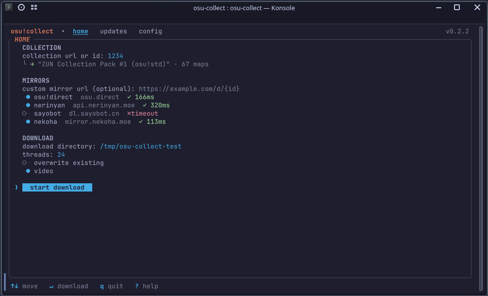

free osu!collector downloader
One link, a whole osu! collection
Paste an osu!collector link and every map downloads through nine mirrors.

Features
Free download
The official osu!Collector app needs a paid subscription. osu!collect is free and asks for no account.
Nine mirrors
Automatic failover keeps downloads going when a few mirrors are throttled.
Verified collection
An integrity-checked collection.db, ready to import into osu! lazer or osu! stable.
Updates
Re-check a collection later and fetch only new or missing maps.
Map search
No collection needed: filter by per-difficulty criteria, routed between the osu! api and nzbasic's community database.
install
Two one-line installers
Linux x64 / macOS Apple Siliconbash
curl -fsSL https://raw.githubusercontent.com/uwuclxdy/osu-collect/main/install.sh | bashWindows x64PowerShell
iwr https://raw.githubusercontent.com/uwuclxdy/osu-collect/main/install.bat -OutFile "$env:TEMP\osu-install.bat"; & "$env:TEMP\osu-install.bat"9
Mirrors with failover
$0
No account
3
Platforms
2
Importers